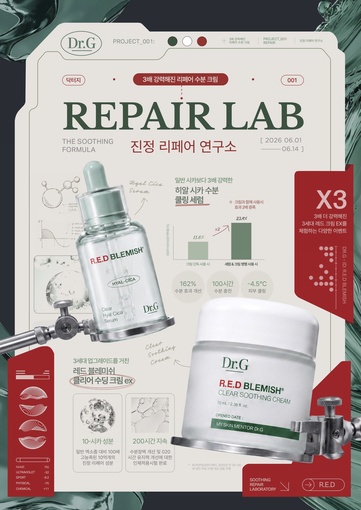
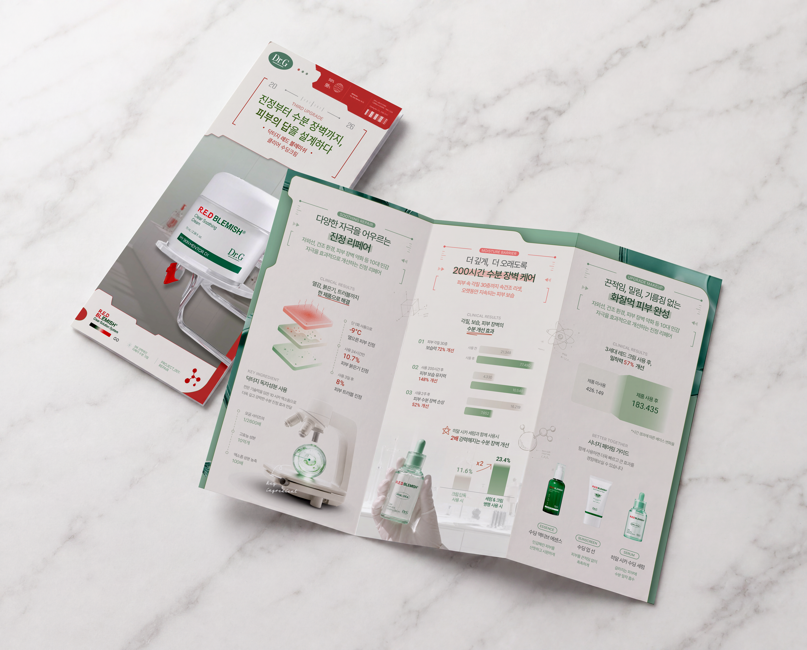
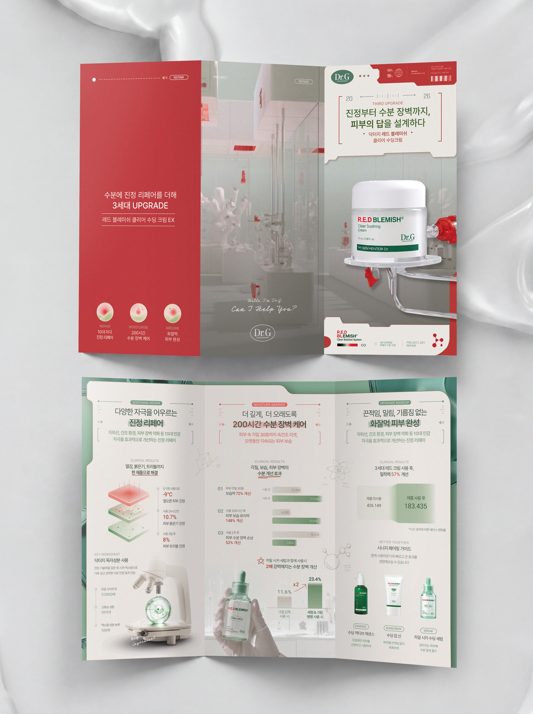

Graphic Design:
Repair Lab
년도
작업 도구
크기
Year
Medium
Measurement
2026
Adobe Suite, Midjourney, Nano Banana
A2

Context
닥터지의 3세대 수딩 크림을 홍보하기 위해 진행된 ‘리페어 연구소’ 팝업의 홍보 포스터를 제작하고, 포스터의 비주얼 요소를 확장하여 제품의 특징과 효능을 소개하는 리플렛을 디자인하였습니다.
Designed a promotional poster for Dr.G’s “Repair Lab” pop-up, created to promote the brand’s third-generation soothing cream. The visual elements established in the poster were further developed into a product leaflet highlighting the cream’s key features and benefits.
Strategy
기존 팝업의 ‘연구소’ 컨셉을 확장하여, 실험실 도구와 연구 장비를 연상시키는 컨셉 이미지를 제작하였습니다. Midjourney를 활용해 이미지의 전반적인 구도와 비주얼을 구성한 뒤, Nano Banana를 통해 실제 제품의 형태와 디테일을 유지하며 이미지를 구체화하는 방식으로 생성형 AI를 활용하였습니다. 또한 포스터를 구성하는 프레임과 배경의 텍스트 및 그래픽 요소에도 실험적이고 과학적인 형태를 추가하여 시각적 일관성을 부여하였습니다.
Expanding on the pop-up’s existing “Repair Lab” concept, I used gen AI to create conceptual photoshoot inspired by laboratory tools and research equipment. I used Midjourney to establish the overall visual direction, then refined the images with Nano Banana to preserve the details of the packaging. Experimental and scientific visual elements were also incorporated into the poster’s framing, background typography, and graphics, creating a cohesive visual identity.

최종 포스터 디자인
final poster design
Leaflet
포스터에서 구축한 디자인 요소를 확장하여 크림 제품의 특징과 효능을 소개하는 리플렛을 제작하였습니다. 그래프와 데이터 시각화를 활용해 제품의 주요 효능을 효과적으로 전달하고, 생성형 AI로 제작한 연구실 배경과 실험 도구 이미지를 활용하였습니다.
Building on the visual elements established in the poster, I designed a product leaflet highlighting the cream’s key features and benefits. Graphs and data visualizations were used to effectively communicate the product’s performance, while generative AI–created laboratory environments and equipment helped maintain a cohesive visual identity across the two pieces.


리플렛 디자인
leaflet design